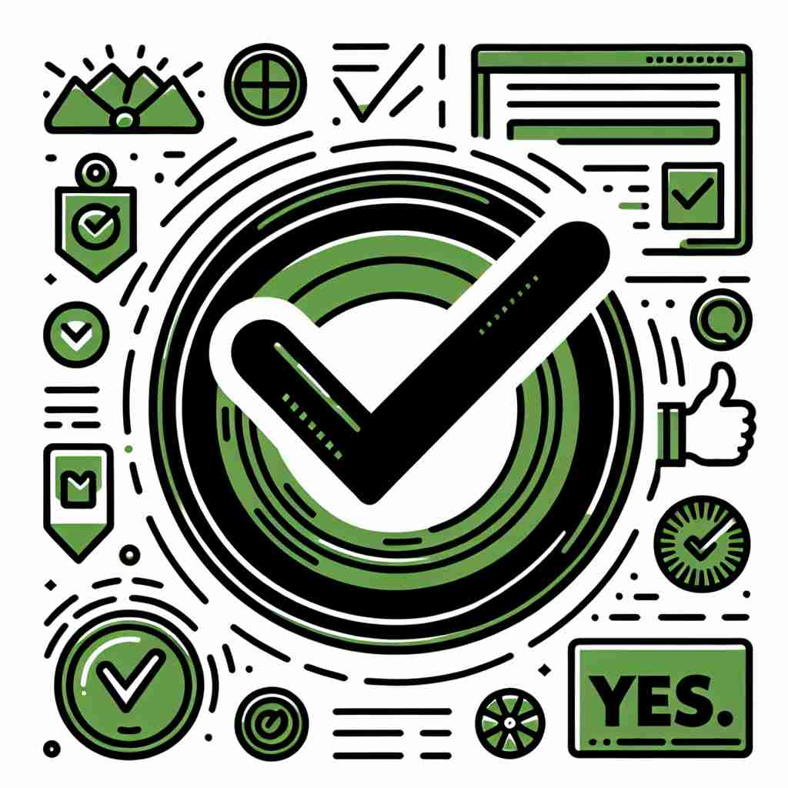

💬 The students are eager to say yes to the test day.

💬 The boy is happy to say yes to ice cream.
💬 He gave a thumbs up to say yes to the idea.

💬 When asked a question, it is polite to say yes.
🔈 [jes]
🗝️ adv./n. used to express agreement or to say that something is correct
🖼️ 在一间会议室里，经理刚刚提出一个新的项目计划。他询问团队的意见，一名员工微笑着点头，用坚定的语气说：'Yes, this approach seems very effective.'通过这个场景，'yes'体现了表达同意和确认某事正确的用法。
🔍 'Yes'的核心含义是表示同意或肯定。从这个核心概念出发，它延伸出了回应请求、回答呼唤、表达兴奋等用法。无论在何种情况下使用'yes'，都可以联想到它最基本的肯定含义，这有助于理解和记忆它的各种用法。
💬 The students are eager to say yes to the test day.
💬 The boy is happy to say yes to ice cream.
💬 He gave a thumbs up to say yes to the idea.
💬 When asked a question, it is polite to say yes.
🌳 这个词没有明显的词根、前缀或后缀，属于完整词。本身是一个简短的肯定回答，用来表示同意、确认或赞成。
💡 可以将 'yes' 联想为一种简洁而有力的肯定，想象一个坚定的点头的动作，帮助记住其作为确认或同意的用途。
🗝️ adv. used to give permission or to agree to a request
🖼️ 在一个小镇的图书馆，孩子请求图书管理员多借一本书。图书管理员友好地看着他，微笑说：'Yes, you may take one more if you promise to return it on time.' 这个场景展示了'yes'用于表示许可或同意请求的情境。
💬 Can I borrow your pen? Yes, of course.
❓ 表示同意某人的请求
🗝️ adv. used to answer a telephone call or respond to someone calling your name
🖼️ 在一个安静的下午，电话铃声突然响起。在厨房忙碌的妈妈立刻跑过去接电话，轻声说：'Yes?'这样，'yes'表现出接电话或回应叫唤的用法。
💬 The phone rang and she answered, 'Yes?'
❓ 表示回应他人的呼叫
🗝️ interj. used to express excitement, pleasure, or enthusiasm
🖼️ 在一场激动人心的篮球比赛中，球员投入了一个关键的三分球，观众席上爆发出欢呼声：'Yes!'这一刻，'yes'用来表达兴奋、愉悦或热情。
💬 Yes! We won the game!
❓ 表达积极情绪的感叹
🗝️ n. an affirmative vote or decision
🖼️ 在一场社区会议上，居民们就是否修建一个新公园进行投票。当过半数的选票为赞成票时，主持人宣布：'The majority have voted yes.'在这里，'yes'作为一个肯定的投票或决定被使用。
💬 The proposal received 10 yeses and 5 nos.
❓ 将肯定的回答具象化